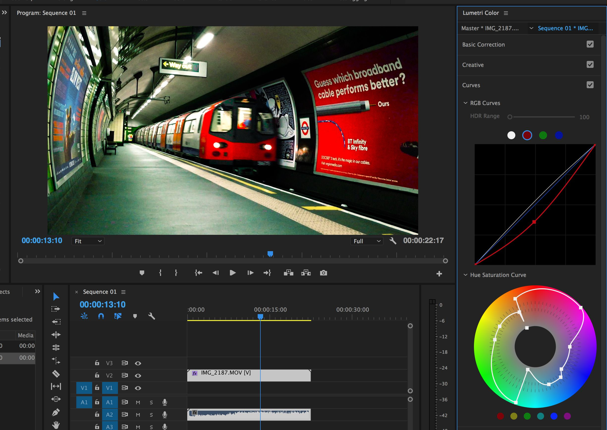

Premiere Pro Services
We offer a variety of Premiere Pro services to suit your preferences, as well as different grading tiers depending on what you are looking for. Our Premiere Pro services include:
Your Film Filtered, Just The Way You Like

We offer a variety of Premiere Pro services to suit your preferences, as well as different grading tiers depending on what you are looking for. Our Premiere Pro services include: